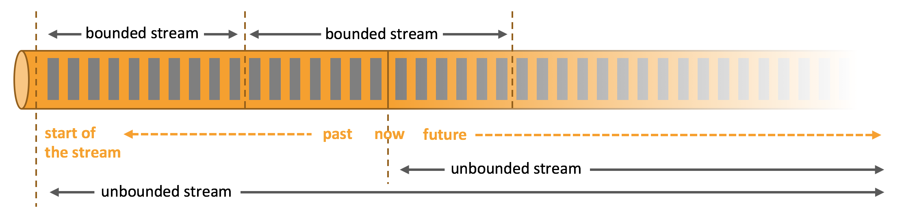
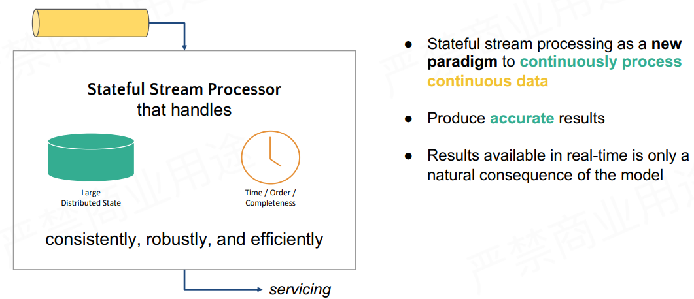
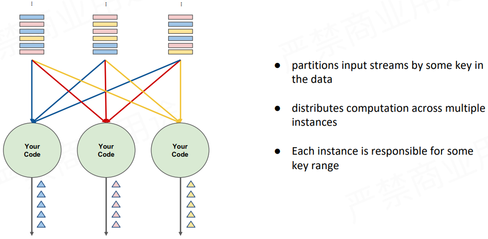
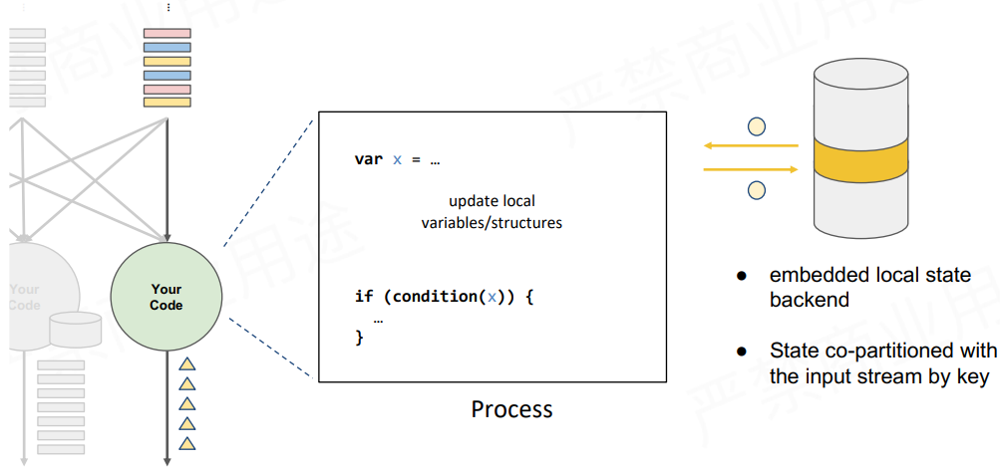
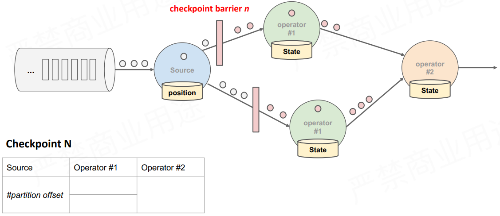
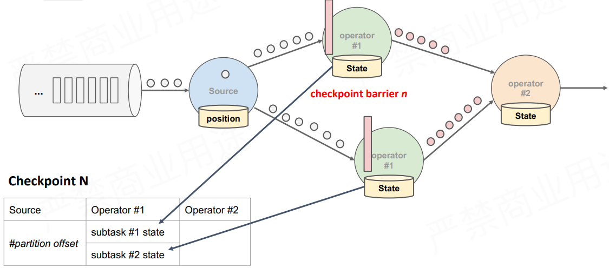

1、前言
基于 Flink 1.5 ~ 1.7
1.1、Flink Application
基础语义：Streams、State、Time
1.1.1、Streams

无边界流\无限流（Unbounded streams）：有开始但是没有明确的结尾。
有边界流\有限流（Bounded streams）：有明确的开始和结尾。
1.1.2、State
Apache Flink 是一个用于有状态的运算的处理引擎，应用状态（Application state）是 Flink 的一等公民。
状态是计算过程中的数据信息，在容错恢复和 Checkpoint 中有重要的作用，流计算在本质上是 Incremental Processing，因此需要不断查询保持状态；另外，为了确保 Exactly- once 语义，需要数据能够写入到状态中；而持久化存储，能够保证在整个分布式系统运行失败或者挂掉的情况下做到 Exactly- once，这是状态的另外一个价值。
关键：增量的处理（Incremental Processing），精确一次的（Exactly-once）语义
1.1.3、Time
事件时间（Event Time）：事件产生的时间。在事件中通常用时间戳描述。
摄取时间（Ingestion time）：时间在源算子（source operator）处进入 Flink dataflow的时间。
处理时间（Processing Time）：在每个算子（operator）处执行基于时间的操作（time-based operation）的本地时间。
Flink 的无限数据流是一个持续的过程，时间是我们判断业务状态是否滞后，数据处理是否及时的重要依据。
1.2、Flink Application - API
API 的表达能力及业务抽象能力都非常强大，但越接近 SQL 层，表达能力会逐步减弱，抽象能力会增强，反之，ProcessFunction 层 API 的表达能力非常强，可以进行多种灵活方便的操作，但抽象能力也相对越小。
从上到下简洁性递减、表现力递增。
ProcessFunctions：Flink 提供的最具表现力（expressive）的函数接口。Flink 提供了处理一个或者多个输入流、或者分组为事件的窗口（grouped in a window）的单个事件（individual events）的 ProcessFunctions。
DataStreamAPI：提供了许多通用的流处理的基本操作（primitives），比如，开窗（windowing）、一次记录（record-at-a-time）转换、通过查询外部存储使事件丰富\充实\扩展（enriching）。
SQL/TableAPI：关系型的（relational） APIs。
1.3、Flink Architecture - Stateful

有状态的 Flink 应用程序针对本地状态访问（local-state access）进行了优化。通过定期地、异步地将本地状态（local-state） checkpointing 到持久性的存储，在遇到故障时 Flink 能够确保精确一次的状态一致性（state consistency）。
第一， Flink 具备统一的框架处理有界和无界两种数据流的能力
第二， 部署灵活，Flink 底层支持多种资源调度器，包括 Yarn、Kubernetes 等。Flink 自身带的 Standalone 的调度器，在部署上也十分灵活。
第三， 极高的可伸缩性，可伸缩性对于分布式系统十分重要，阿里巴巴双 11 大屏采用 Flink 处理海量数据，使用过程中测得 Flink 峰值可达 17 亿 / 秒。
第四， 极致的流式处理性能。Flink 相对于 Storm 最大的特点是将状态语义完全抽象到框架中，支持本地状态读取，避免了大量网络 IO，可以极大提升状态存取的性能。
Flink 具备 7 X 24 小时高可用的 SOA（面向服务架构）。在实现上 Flink 提供了一致性的 Checkpoint。Checkpoint 是 Flink 实现容错机制的核心，它周期性的记录计算过程中 Operator 的状态，并生成快照持久化存储。当 Flink 作业发生故障崩溃时，可以有选择的从 Checkpoint 中恢复，保证了计算的一致性。
Flink 本身提供监控、运维等功能或接口，并有内置的 WebUI，对运行的作业提供 DAG 图以及各种 Metric 等，协助用户管理作业状态。
2、应用场景
2.1、Data pipeline
提取-转换-加载（ETL）是在不同存储系统之间进行数据转换和数据移动的常见方式。Flink 数据管道（data pipeline）以持续的流的模式进行处理（流式 ETL 或者实时 ETL），而不是定期触发。Flink 能够订阅消息队列的消息并进行处理，清洗完成后实时写入到下游的 Database 或 File system 中，比如：
实时数仓
当下游要构建实时数仓时，上游则可能需要实时的 Stream ETL。这个过程会进行实时清洗或扩展数据，清洗完成后写入到下游的实时数仓的整个链路中，可保证数据查询的时效性，形成实时数据采集、实时数据处理以及下游的实时 Query。
搜索引擎推荐
以淘宝为例，当卖家上线新商品时，后台会实时产生消息流，该消息流经过 Flink 系统时会进行数据的处理、扩展。然后将处理及扩展后的数据生成实时索引，写入到搜索引擎中。这样当淘宝卖家上线新商品时，能在秒级或者分钟级实现搜索引擎的搜索。
2.2、Data Analytics
分析工作，从原始数据中提取信息（information）、获得洞见（insight）。
Flink 可以进行批分析（batch analytics），也可以进行流分析（streaming analytics）。
Batch Analysis 就是传统意义上使用类似于 Map Reduce、Hive、Spark Batch 等，对作业进行分析、处理、生成离线报表，Streaming Analytics 使用流式分析引擎如 Storm，Flink 实时处理分析数据，应用较多的场景如实时大屏、实时报表。
2.3、Data Driven
事件驱动（event-driven）应用是状态应用，它从一个或多个事件流摄取事件（ingest events），并通过触发运算、状态更新（state updates）、或者外部行为（external actions）对到来的事件做出反应。
从某种程度上来说，所有的实时的数据处理或者是流式数据处理都是属于 Data Driven，流计算本质上是 Data Driven 计算。应用较多的如风控系统，当风控系统需要处理各种各样复杂的规则时，Data Driven 就会把处理的规则和逻辑写入到 Datastream 的 API 或者是 ProcessFunction 的 API 中，然后将逻辑抽象到整个 Flink 引擎中，当外面的数据流或者是事件进入就会触发相应的规则，这就是 Data Driven 的原理。在触发某些规则后，Data Driven 会进行处理或者是进行预警，这些预警会发到下游产生业务通知，这是 Data Driven 的应用场景，Data Driven 在应用上更多应用于复杂事件的处理。
3、概念解析
3.1、有状态的流式处理

传统批处理方法是持续收取数据，以时间作为划分多个批次的依据，再周期性地执行批次运算。
但假设需要计算每小时出现事件转换的次数，如果事件转换跨越了所定义的时间划分，传统批处理会将中间运算结果带到下一个批次进行计算；除此之外，当出现接收到的事件顺序颠倒情况下，传统批处理仍会将中间状态带到下一批次的运算结果中，这种处理方式也不尽如人意。
理想方法要满足的条件：
- 必须要有能力可以累积状态和维护状态，累积状态代表着过去历史中接收过的所有事件，会影响到输出。
- 对于数据完整性有机制可以操控，当所有数据都完全接受到后，输出计算结果。
- 实时产生结果，但更重要的是采用新的持续性数据处理模型来处理实时数据，这样才最符合 continuous data 的特性。

3.2、流式处理
流式处理，即有一个无穷无尽的数据源在持续收取数据，以代码作为数据处理的基础逻辑，数据源的数据经过代码处理后产生出结果，然后输出。
3.3、分布式流式处理

假设 Input Streams 有很多个使用者，每个使用者都有自己的 ID，如果计算每个使用者出现的次数，需要让同一个使用者的出现事件流到同一运算代码，这跟其他批次需要做 group by 是同样的概念，所以跟 Stream 一样需要做分区，设定相应的 key，然后让同样的 key 流到同一个 computation instance 做同样的运算。
3.4、有状态的分布式流式处理
如图，上述代码中定义了变数 X，X 在数据处理过程中会进行读和写，在最后输出结果时，可以依据变数 X 决定输出的内容，即状态 X 会影响最终的输出结果。这个过程中，第一个重点是先进行了状态 co-partitioned key by，同样的 key 都会流到 computation instance，与使用者出现次数的原理相同，次数即所谓的状态，这个状态一定会跟同一个 key 的事件累积在同一个 computation instance。

相当于根据输入流的 key 重新分区的 状态，当分区进入 stream 之后，这个 stream 会累积起来的状态也变成 copartiton 了。第二个重点是 embeded local state backend。有状态分散式流式处理的引擎，状态可能会累积到非常大，当 key 非常多时，状态可能就会超出单一节点的 memory 的负荷量，这时候状态必须由状态后端去维护它；在这个状态后端在正常状况下，用 in-memory 维护即可。
4、Apache Flink 的优势
4.1、状态容错
考虑状态容错时难免会想到精确一次的状态容错，应用在运算时累积的状态，每笔输入的事件反映到状态，更改状态都是精确一次，如果修改超过一次的话也意味着数据引擎产生的结果是不可靠的。
- 如何确保状态拥有精确一次（Exactly-once guarantee）的容错保证？
- 如何在分散式场景下替多个拥有本地状态的运算子产生一个全域一致的快照（Global consistent snapshot）？
- 更重要的是，如何在不中断运算的前提下产生快照？
4.1.1、简单场景的精确一次容错方法
以使用者出现次数为例，如果某个使用者出现的次数计算不准确，不是精确一次，那么产生的结果是无法作为参考的。在考虑精确的容错保证前，先考虑最简单的使用场景，如无限流的数据进入，后面单一的 Process 进行运算，每处理完一笔计算即会累积一次状态，这种情况下如果要确保 Process 产生精确一次的状态容错，每处理完一笔数据，更改完状态后进行一次快照，快照包含在队列中并与相应的状态进行对比，完成一致的快照，就能确保精确一次。
4.1.2、分布式状态容错
Flink 作为分布式的处理引擎，在分布式的场景下，进行多个本地状态的运算，只产生一个全域一致的快照。
当 Operator 在分布式的环境中，在各个节点做运算，处理每一笔数据的快照点是连续的，这次运算流过所有的算子（运算元？），更改完所有的运算值后，能够看到每一个运算值的状态与该笔运算的位置。
容错恢复
检查点（Checkpoint），上面提到连续性快照每个 Operator 本地的状态后端都要维护状态，也就是每次产生检查点时会将它们传入共享的 DFS 中。当任何一个 Process 故障后，可以直接从完整的 Checkpoint 将所有的 Operator 状态恢复，重新设定到相应位置。Checkpoint 的存在使整个 Process 能够实现分散式环境中的 Exactly-once。
4.1.3、分布式快照方法
Flink 基于 simple lamport 演算法机制在不中断运算的情况下持续产生 Global consistent snapshot。已知一个点 Checkpoint barrier，Flink 在某个 Datastream 中会一直安插 Checkpoint barrier，Checkpoint barrier N 表示所有这个范围内的数据都属于 Checkpoint barrier N。
假如要产生 Checkpoint barrier N，Flink 的 job manager 会触发 Checkpoint，Checkpoint 被触发后开始从数据源产生 Checkpoint barrier。job 产生 Checkpoint barrier N 的过程，可以理解为 Checkpoint barrier N 逐步填充左下角的表格的过程。

如图，Checkpoint barrier N 负责的是途中标红的数据或事件。Checkpoint barrier N 后面的白色部分的数据或事件则不属于 Checkpoint barrier N。
在以上的基础上，当数据源收到 Checkpoint barrier N 之后会先将自己的状态保存，以读取 Kafka 资料为例，数据源的状态就是目前它在 Kafka 分区的位置，这个状态也会写入到上面提到的表格中。下游的 Operator 1 会开始运算属于 Checkpoint barrier N 的数据，当 Checkpoint barrier N 跟着这些数据流动到 Operator 1 之后，Operator 1 也将属于 Checkpoint barrier N 的所有数据都反映在状态中，当收到 Checkpoint barrier N 时也会直接对 Checkpoint 去做快照。

当快照完成后继续往下游走，Operator 2 也会接收到所有数据，然后搜索 Checkpoint barrier N 的数据并直接反映到状态，当状态收到 Checkpoint barrier N 之后也会直接写入到 Checkpoint N 中。以上过程到此可以看到 Checkpoint barrier N 已经完成了一个完整的表格，这个表格叫做 Distributed Snapshots，即分布式快照。分布式快照可以用来做状态容错，任何一个节点挂掉的时候可以在之前的 Checkpoint 中将其恢复。继续以上 Process，当多个 Checkpoint 同时进行，Checkpoint barrier N 已经流到 job manager 2，Flink job manager 可以触发其他的 Checkpoint，比如 Checkpoint N + 1，Checkpoint N + 2 等等也同步进行，利用这种机制，可以在不阻挡运算的状况下持续地产生 Checkpoint。
4.2、状态维护
Flink 用一段代码在本地维护状态值，当状态值非常大时需要本地的状态后端来支持。
如图，在 Flink 程序中，可以采用 getRuntimeContext().getState(desc); 这组 API 去注册状态。Flink 有多种状态后端，采用 API 注册状态后，读取状态时都是通过状态后端来读取的。Flink 有两种不同的状态值，也有两种不同的状态后端：
4.2.1、JVM Heap 状态后端
适合数量较小的状态。JVM Heap 状态后端会在每一次运算值需要读取状态时，用 Java object read / writes 进行读或写，不会产生较大代价，但当 Checkpoint 需要将每一个运算值的本地状态放入 Distributed Snapshots 的时候，就需要进行序列化了。
4.2.2、RocksDB 状态后端
是一种 out of core 的状态后端。在 Runtime 的本地状态后端让使用者去读取状态的时候会经过磁盘，相当于将状态维护在磁盘里，与之对应的代价可能就是每次读取状态时，都需要经过序列化和反序列化的过程。当需要进行快照时只将应用序列化即可，序列化后的数据直接传输到中央的共享 DFS 中。
4.3、事件时间（Event - Time）
4.3.1、不同时间种类
Event - Time，事件实际产生的时间。
Processing - Time，处理引擎处理事件的时间。
4.3.2、Event - Time 处理
Event-Time 处理是用事件真实产生的时间戳去做 Re-bucketing，然后 Bucket 产生结果。

Event - Time 的关键在于引擎输出运算结果的时间。简单来说，流式引擎连续 24 小时在运行、搜集资料，假设 Pipeline 里有一个 windows Operator 正在做运算，每小时能产生结果，何时输出 windows Operator 的运算值，这个时间点就是 Event - Time 处理的精髓。
4.3.3、Watermarks
Flink 实际上是用 watermarks 来实现 Event - Time 的功能。Watermarks 在 Flink 中也属于特殊事件，其精髓在于当某个运算值收到带有时间戳“ T ”的 watermarks 时就意味着它不会接收到新的数据了。使用 watermarks 的好处在于可以准确预估收到数据的截止时间。举例，假设预期收到数据时间与输出结果时间的时间差延迟 5 分钟，那么 Flink 中所有的 windows Operator 搜索 3 点至 4 点的数据，但因为存在延迟需要再多等 5 分钟直至收集完 4：05 分的数据，此时方能判定 4 点钟的资料收集完成了，然后才会产出 3 点至 4 点的数据结果。这个时间段的结果对应的就是 watermarks 的部分。
4.4、状态保存与迁移
流式处理应用无时无刻不在运行，运维上有几个重要考量：
- 更改应用逻辑 / 修 bug 等，如何将前一执行的状态迁移到新的执行？
- 如何重新定义运行的平行化程度？
- 如何升级运算丛集的版本号？
Checkpoint 完美符合以上需求，不过 Flink 中还有另外一个名词保存点（Savepoint），当手动产生一个 Checkpoint 的时候，就叫做一个 Savepoint。Savepoint 跟 Checkpoint 的差别在于检查点是 Flink 对于一个有状态应用在运行中利用分布式快照持续周期性的产生 Checkpoint，而 Savepoint 则是手动产生的 Checkpoint，Savepoint 记录着流式应用中所有运算元的状态。
如图，Savepoint A 和 Savepoint B，无论是变更底层代码逻辑、修 bug 或是升级 Flink 版本，重新定义应用、计算的平行化程度等，最先需要做的事情就是产生 Savepoint。
Savepoint 产生的原理是在 Checkpoint barrier 流动到所有的 Pipeline 中手动插入从而产生分布式快照，这些分布式快照点即 Savepoint。Savepoint 可以放在任何位置保存，当完成变更时，可以直接从 Savepoint 恢复、执行。
从 Savepoint 的恢复执行需要注意，在变更应用的过程中时间在持续，如 Kafka 在持续收集资料，当从 Savepoint 恢复时，Savepoint 保存着 Checkpoint 产生的时间以及 Kafka 的相应位置，因此它需要恢复到最新的数据。无论是任何运算，Event - Time 都可以确保产生的结果完全一致。
假设恢复后的重新运算用 Process Event - Time，将 windows 窗口设为 1 小时，重新运算能够在 10 分钟内将所有的运算结果都包含到单一的 windows 中。而如果使用 Event – Time，则类似于做 Bucketing。在 Bucketing 的状况下，无论重新运算的数量多大，最终重新运算的时间以及 windows 产生的结果都一定能保证完全一致。